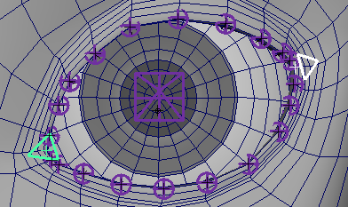

Creates a cartoon eye and eyelids rig.
There are three layers of
control over the eyelids:
- The first layer consists of two corner ctrls and two mid ctrls.
- The second layer consists of minor ctrls.
- And an optional third layer of micro ctrls.
Each layer gives you more control over smaller areas of the eyelids.
The
eyeball can move, rotate, and scale freely with or without the eyelids.
Notes:
- The eyelids should be modeled open.
- For best results, the upper eyelid and lower eyelid edge count should match.
Guides:
- 'Eyeball Center Guide' - Position it at the eyeball's center and align
its arrow with the pupil's direction.
- 'Aim At Guide' - Position where you want the 'eye_aim_at_ctrl'.
- 'Inner Corner Guide' - Position and orient at the eyelids'
inner corner.
- 'Outer Corner Guide' - Position and orient at the
eyelids' outer corner.
- 'Upper ## Guides' - Position along the
upper eyelid edge. When you position one guide on each vertex (not including the corners), skinning will
be easier. The 'Upper Lid Jnts' attribute controls how many guides are created.
- 'Lower ## Guides' - Position along the lower eyelid edge.
When you position one guide on each vertex (not including the corners), skinning will be easier. The
'Lower Lid Jnts' attribute controls how many guides are created.

Attributes:
- 'Ctrls Scale' - Scale all the node ctrls. Note
that the attachments 'Ctrls
Settings' and 'CtrlsShape' will
override this. [Video]
- 'Upper Lid Jnts' - Number of guides/skinning joints for the
upper eyelid. Each edge loop should have a guide.
- 'Lower Lid Jnts' - Number of guides/skinning joints for the
lower eyelid. Each edge loop should have a guide.
- 'Minor Ctrls' - Number of minor ctrls for EACH eyelid.
- 'Micro Ctrls' - Adds a third layer of ctrls for
each skinning joint. [Video]
Connections:
- 'Root Input' - Drives the eyelids and the eyeball.
- 'Aim Ctrl' - Drives the 'eye_aim_at_ctrl'.
- 'Eyeball Output' - An output at 'eyeball_jnt'.
_____________________________________________
Get Arise at: https://www.ariserigging.com